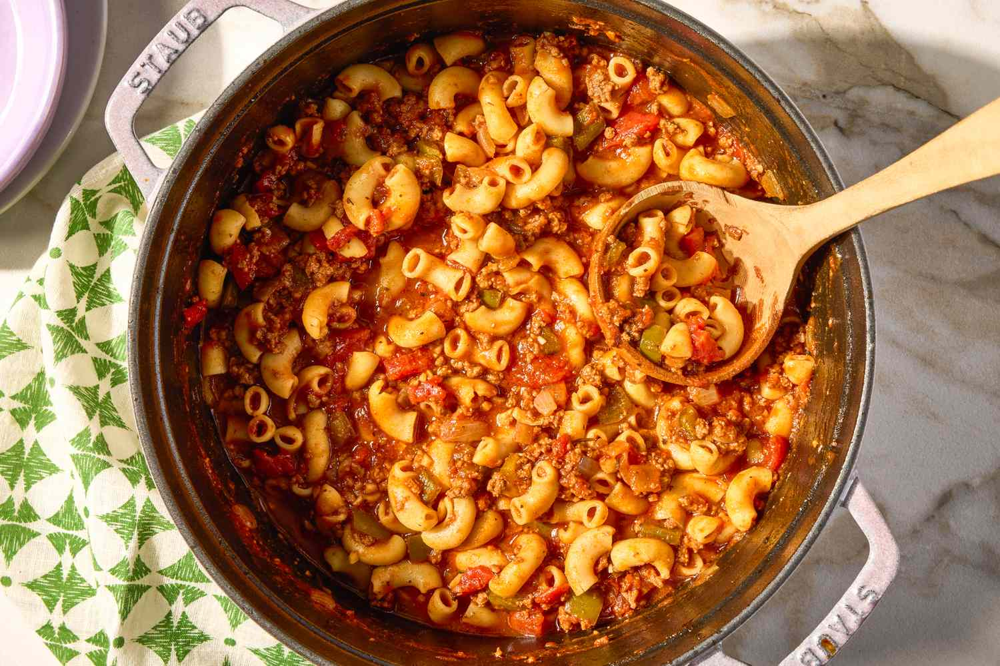

American Chop Suey Recipe

Description
American chopped suey is a hearty pasta dish made with ground beef, elbow macaroni, tomato sauce, onions, peppers, and simple seasonings. It’s warm, filling, and comforting, with a classic homemade flavor that feels easy and satisfying.
The sauce brings everything together, coating the pasta and beef in a rich tomato base with savory flavor in every bite. It’s the kind of meal that works well for a quick family dinner, meal prep, or anytime you want something cozy, simple, and filling.
Ingredients
- Elbow Noodles
- Butter
- Onions
- Ground Beef
- Garlic
- Green Peppers
- Tomatoes
- Tomatoe Sauce
- Spices of your choice
- Sugar
- Tomato paste
- tomato juice
- Worcestershire Sauce
How to make it
- Cook pasta according to packages instructions.
- In a separate pot, add butter and onion over medium heat and cook, stirring occasionally until onions are transulscent. Takes about 4 minutes.
- Add garlic and onions and cook for 1 minute, stirring frequently.
- Add ground beef and cook until browned.
- Add green peppers and cook until soft. Usually lasts about 5 minutes.
- Dice and add tomatoes, sauce, juice, paste, sugar, spices, and Worcestershire sauce. Cook until evenly heated
- Stir in pasta and add salt and pepper to taste.
Congratulations! You now have American Chopped Suey!
Return to Recipes Page